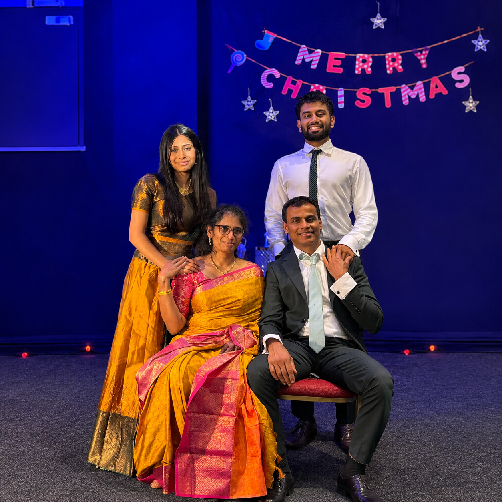
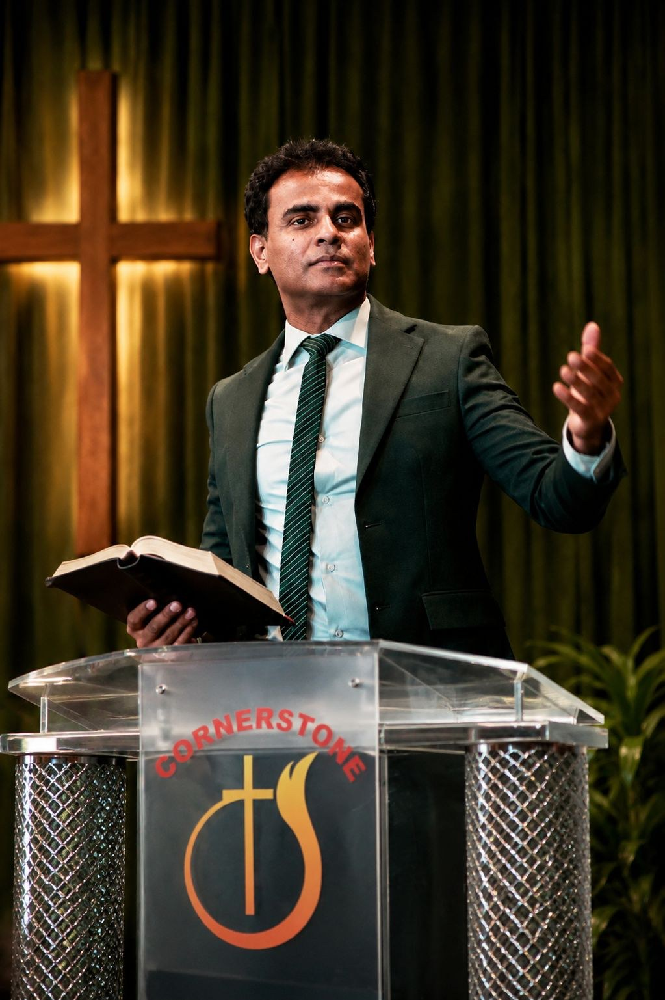

About Cornerstone Church of God
Rooted in Jesus Christ, established in Coventry in 2001, and faithfully serving our community in faith, hope, and love.
Rooted in Jesus Christ, established in Coventry in 2001, and faithfully serving our community in faith, hope, and love.
Cornerstone Church of God was established in 2001 in Coventry as a spiritual haven for Tamil-speaking families, students, and professionals making the United Kingdom their home.
Founded upon vibrant praise, faithful exposition of the Scriptures, and unconditional Christian love, our congregation has grown into a mature, multi-generational family of believers worshipping weekly on Howard Street.
On 16 March 2025, by God's gracious providence, we celebrated the founding of our first branch — Rugby Tamil Cornerstone Church of God — expanding our reach to bless families across Warwickshire.

"The stone which the builders rejected has become the chief cornerstone." — Psalm 118:22
In classical architecture, the cornerstone is the first stone set in the construction of a masonry foundation. All other stones will be set in reference to this stone, determining the position of the entire structure.
In the same way, Jesus Christ is our Chief Cornerstone (Ephesians 2:20). He is the anchor and measure of our faith, doctrine, worship, and community life. Everything we do is aligned to Him.
The cornerstone binds different walls into one coherent temple. Christ unites us as one family across Tamil and English cultures, older generations, and vibrant youths.
Our vision is to build a vibrant, Bible-believing, Christ-centred church where people can worship God in spirit and in truth, grow in His holy Word, experience the miraculous power of prayer, and share the Good News of salvation through Jesus Christ.
"I will build My church, and the gates of Hades shall not prevail against it."
Through worship, prayer, fellowship, and outreach, we seek to see lives transformed, families strengthened, marriages healed, and believers united in faith and unconditional love throughout Coventry, Warwickshire, and beyond.
"Not by might nor by power, but by My Spirit, says the Lord of hosts."

Pastor Clint Pradeepan is the founding and Senior Pastor of Cornerstone Church of God, Coventry — a Spirit-filled Tamil and English congregation established in 2001. With over two decades of faithful ministry, he is known for his compassionate pastoral care, expository Bible preaching, and unwavering commitment to the local church.
Ordained within the Church of God tradition, Pastor Clint serves as a spiritual shepherd, counselor, and visionary leader for the Cornerstone congregation. His ministry encompasses Sunday worship leadership, midweek prayer, pastoral counseling, church planting, and global missions support.
In 2025, he pioneered the Rugby Tamil Cornerstone Church of God — the church's first branch in Warwickshire — extending the gospel reach beyond Coventry. Pastor Clint is warmly supported in ministry by his family, whose love and service reflect the heart of Cornerstone's community.

Pastor Clint's preaching is rooted in the whole counsel of God's Word — expository, relevant, and deeply pastoral. Each Sunday message is prayerfully prepared to equip believers, challenge the uncommitted, and comfort the hurting.
His leadership extends beyond the pulpit: he oversees all church ministries, provides spiritual direction for deacons and ministry leaders, and personally accompanies church members through seasons of grief, illness, and celebration.
Whether you are walking through life's deepest trials, celebrating new family milestones, or seeking answers about faith in Christ, Pastor Clint and our elders are always accessible to pray with you and walk alongside you.
Join us this coming Sunday at Howard Street in Coventry or Oliver Street in Rugby. A warm cup of tea and a loving congregation await you.